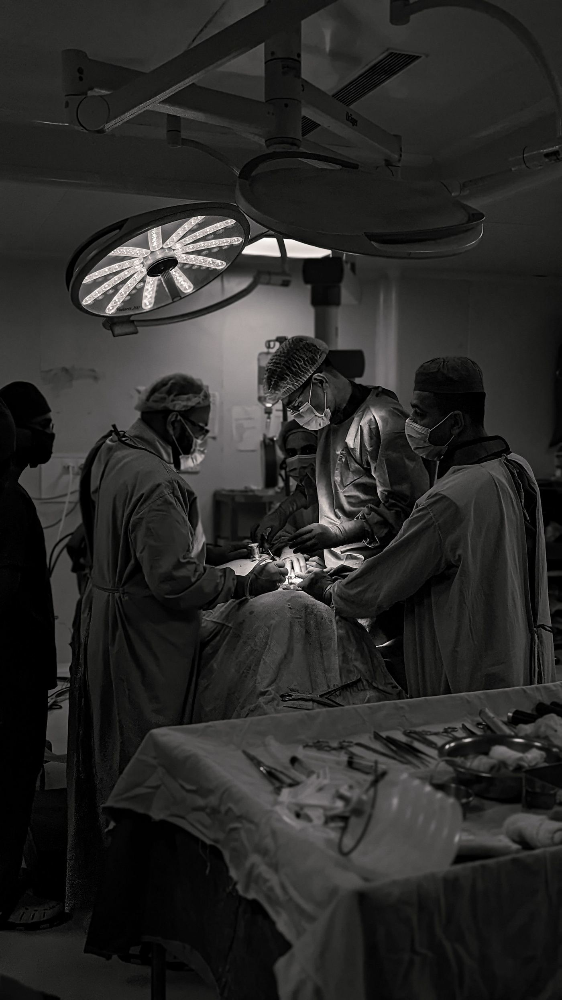

We all know the "doctor" flex — the stethoscope, the long white coat, the years of "sorry, still studying." But what does that actually pay? We pulled the real numbers so you can stop guessing and start comparing.
Public Sector: The Government Grind
Most doctors in government hospitals are paid on a fixed scale, with clear steps from entry-level to specialist.
| Role | Monthly Pay | The Vibe |
|---|---|---|
| Medical Officer Grade 1 (entry) | R75,000 – R97,000 | Fresh out the OSD scale, overtime included |
| Medical Officer 1–3 (by seniority) | R40,000 – R54,000 | Climbing the ladder, no overtime yet |
| Specialist (entry, public) | R37,281 – R94,754 | Public hospital life, day one |
| Specialist (5+ years, public) | R51,139 – R130,116 | Seasoned, still in the system |

Private Sector: Where It Gets Interesting
Once you're off the government scale, income depends on your patient book, your reputation, and how many procedures you're billing.
| Role | Monthly Pay | The Vibe |
|---|---|---|
| GP, private practice | R30,000 – R70,000 | Depends entirely on your patient book |
| Specialist (entry, private, 1–3 yrs) | ~R64,000 | New to private, still building a name |
| Specialist (senior, private, 8+ yrs) | ~R104,000 | Plus an average R29,703/year bonus |
| Top surgical specialists (neuro, cardiothoracic) | R150,000 – R200,000+ | The ones with the waitlists |
The Full Spread
Why Such a Gap?
Public = predictable OSD scale. Private = you eat what you bill.
Intern → community service → Medical Officer → Specialist = real jumps at each stage.
Cities and procedure-heavy specialties (surgery, cardiology, radiology) pay more.
Surgical fields sit at the very top of the food chain.